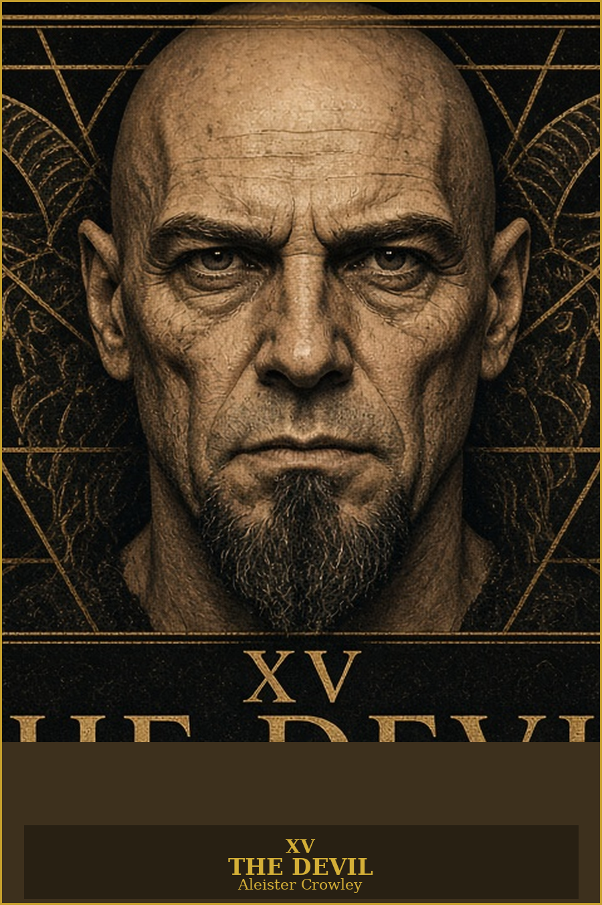
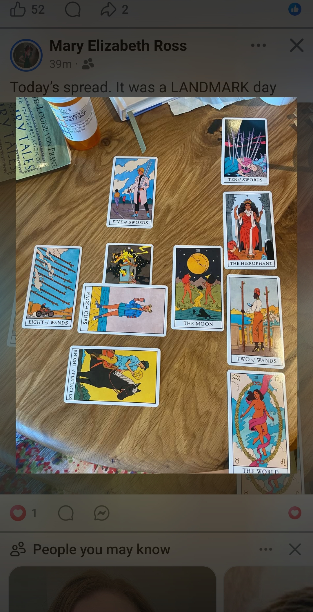

A reading by Aleister Crowley (XV, The Devil) of Mary Elizabeth Ross's spread for the day, read 12 October 2026.

The deck is a Rider–Waite-style one that looks like the Modern Witch Tarot. There are ten cards. The left side shows a recent upheaval, and the right-hand column climbs to The World, which fits the "landmark day."
This is the uncertain middle passage. Not everything is clear yet, and dreams, intuition and fear are all in play. With Marie-Louise von Franz's book on fairy tales beside the cards, it is likely being read the Jungian way, as a trip through the unconscious.
An ending took effort and pain, but it's done. There's a dark stretch to cross in the middle, and the line runs toward completion. The two majors at the far ends, The Tower and The World, carry the most weight: something broke so that something could be made whole.
Love is the law, love under will.